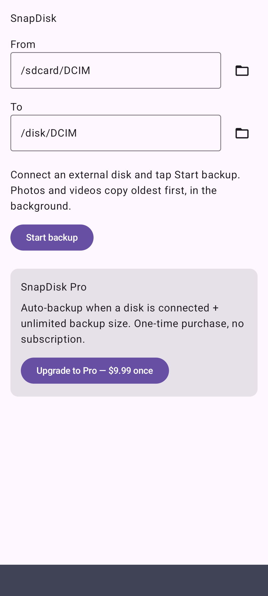

TL;DR: To back up photos to an external drive on Android, plug the drive into your phone and copy your photos to it — no cloud, no account, no upload. The easy way is SnapDisk: plug in the drive, tap Backup in the notification, and your photos and videos copy oldest-first in the background, with live progress and Pause / Stop. The free version covers 5 GB per run; Pro is a one-time $9.99 for auto-backup on connect and unlimited size. If you'd rather do it by hand, the Files app does the same copy — just slower and with no resume if you unplug mid-copy.
What "external drive" means on Android
An external drive is any storage that isn't built into your phone: a USB-C flash drive, a portable hard drive, or a portable SSD. Android sees it through OTG (On-The-Go) — the phone's USB-C port switches to host mode and the drive shows up as external storage, just like a memory card. Most modern Android phones support OTG; if yours doesn't see the drive, a different adapter is usually the fix.
- USB-C flash drive. The smallest option — plugs straight into the phone, no cable, no adapter. Good for a camera roll of a few dozen gigabytes.
- Portable hard drive or SSD. The roomier option — a terabyte or more for a whole photo library. Needs a USB-C OTG adapter (or a USB-C cable, for drives that have one). A spinning hard drive may need its own power; an SSD usually doesn't.
- One format note. Drives formatted FAT32 can't hold a single file over 4 GB. That only matters for very long videos — SnapDisk skips those files and lists them instead of failing the whole backup. A drive formatted exFAT has no such limit.
Whichever drive you pick, the backup itself is the same: a copy from your phone's storage to the drive, with nothing uploaded anywhere. That is the whole point of an external-drive backup — the copy is yours, on hardware you hold.
What you need
- An Android phone (Android 7.0 or later for SnapDisk).
- An external drive your phone can read — a USB-C flash drive, or a portable drive with a USB-C OTG adapter. If the phone doesn't see the drive, try a different adapter.
- Enough space on the drive for the photos you want to keep. Check the drive's free space first — a phone's camera roll is often tens of gigabytes.
Method 1: SnapDisk (one tap, background copy)
SnapDisk is a free Android app that does exactly this job and nothing else — and it does it entirely offline. Install it from the v0.1.2 APK (it's not on Google Play yet), then:
- Plug in the external drive. SnapDisk offers a backup in a notification: "External storage is connected. Backup photos?"
- Tap Backup. Photos and videos copy oldest-first — your earliest photos first — in the background, while you use the phone normally. By default it copies from /sdcard/DCIM to /disk/DCIM on the drive; both folders can be changed in Settings.
- Watch the progress notification — real percent, copied / total size, speed, and time left — with Pause and Stop. You can pause and resume any time.
- Wait for "Backup complete." Every file is size-verified after copying, so the counts are proof, not a promise. Files that already copied are never copied twice.

If you unplug the drive mid-copy, the backup pauses with the full error shown and resumes where it stopped when the drive is back. If a file is corrupt or too big for FAT32, it's retried once, then skipped with its reason listed — it never stalls the whole backup.
The free version backs up manually, up to 5 GB per backup run, with no ads, no account, and no cloud. SnapDisk Pro is a one-time $9.99 purchase (no subscription) that starts the backup automatically when you plug in a disk and removes the size limit. The app has no internet permission, so your photos physically cannot leave your device.
Method 2: by hand in the Files app (no app needed)
If you'd rather not install anything, Android's built-in Files app can copy your photos to the external drive — also fully offline:
- Plug in the external drive. A notification or a "USB drive" entry should appear in the Files app under Storage devices.
- Open Files, browse to Internal storage → DCIM → Camera. That's where your phone's photos live. (Screenshots are in DCIM → Screenshots; other apps keep their own folders.)
- Select the photos, tap ⋮ → Copy to (or Move to, if you want them off the phone), then choose the external drive as the destination.
- Wait for the copy to finish — and don't unplug the drive until the Files app says it's done.
This works fine for a one-off copy of a few dozen photos. Its limits are the reason SnapDisk exists: no progress detail beyond a spinner, no resume if you unplug mid-copy, no verification that every file actually arrived, and you have to repeat the whole manual selection next time. For a full camera roll, the app's oldest-first background copy is the calmer option. If you want the whole DCIM folder in one go, see How to back up DCIM to OTG storage on Android.
What to avoid
- Moving before verifying. "Move to" deletes the originals as it goes. Copy first, check the drive, then delete from the phone — never the other way round.
- Unplugging mid-copy. Pulling an external drive out while files are still writing can corrupt the file in flight. Wait for the copy to finish, or pause it first — SnapDisk's Stop button exists for exactly this.
- An app that calls itself offline but asks for an account. If a backup app needs you to sign in before it copies anything, your photos are going through its servers — that is a cloud backup with an offline label. A genuinely offline app has nothing to log into and no internet permission to upload with.
Rule of thumb: if the backup works with the phone in airplane mode, it is offline. Try it — SnapDisk copies with no connection at all, because there is nothing to connect to.
On your phone instead
If you'd rather tap once than select folders by hand, SnapDisk backs up your photos to an external drive — free, no ads, no account, no cloud, and your photos never leave the phone. See also: How to back up photos to a USB drive without uploading them, USB photo backup on Android: back up photos to an external drive without uploading them, and How to back up photos offline on Android — no cloud, no account.